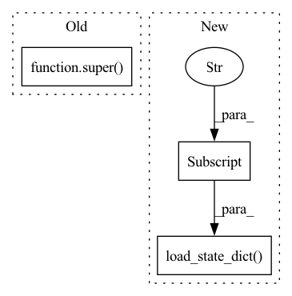

Pattern ID :9357
Before Change
@classmethod
def build_model(cls, model_path, load_state_dict=False):
model = super() .build_model(model_path, load_state_dict=load_state_dict)
config = torch.load(model_path, map_location=lambda storage, loc: storage)
fixed_attractor = config["attractor"]After Change
model = cls(base_model, dummy_attractor)
if load_state_dict:
model.load_state_dict(config["state_dict"] )
else:
raise ValueError("Set load_state_dict=True")
return modelIn pattern: SUPERPATTERN
Frequency: 3
Non-data size: 3
Instances Fragment ID: 33521849
Project Name: tky823/dnn-based_source_separation
Commit Name: e05e8c7e39f6c678d58ce21705caa26f880c7119
Time: 2021-11-22
Author: delta9guitar97@gmail.com
File Name: src/models/danet.py
M Class Name: FixedAttractorDANet
N Class Name: FixedAttractorDANet
M Method Name: build_model(3)
N Method Name: build_model(3)
M Parent Class: nn.Module
N Parent Class: DANet
M File Name: src/models/danet.py
N File Name: src/models/danet.py
M Start Line: 390
M End Line: 394
N Start Line: 395
N End Line: 406
Before Change
super().__init__(model, loader, criterion, args)
def _reset(self, args):
super() ._reset(args)
self.musdb18_root = args.musdb18_root
After Change
config = torch.load(args.model_path, map_location=lambda storage, loc: storage)
if isinstance(self.model, nn.DataParallel):
self.model.module.load_state_dict(config["state_dict"] )
else:
self.model.load_state_dict(config["state_dict"])
def run(self): Fragment ID: 33521848
Project Name: tky823/dnn-based_source_separation
Commit Name: 149ed6ddfa0ed3255f87e8fdc0a6049051c8643f
Time: 2021-10-10
Author: 40362510+tky823@users.noreply.github.com
File Name: egs/musdb18/conv-tasnet/src/adhoc_driver.py
M Class Name: AdhocTester
N Class Name: AdhocTester
M Method Name: _reset(2)
N Method Name: _reset(2)
M Parent Class: TesterBase
N Parent Class: TesterBase
M File Name: egs/musdb18/conv-tasnet/src/adhoc_driver.py
N File Name: egs/musdb18/conv-tasnet/src/adhoc_driver.py
M Start Line: 124
M End Line: 124
N Start Line: 124
N End Line: 151
Before Change
@classmethod
def from_pretrained(cls, pretrained_model_name_or_path, *model_args, **kwargs):
model = super() .from_pretrained()
model.numericalizer = BartNumericalizer(pretrained_model_name_or_path)
return model, 0 //TODO return best_decascore
After Change
logger.info(f"Loading the model from {full_checkpoint_path}")
model = Bart(args=args)
save_dict = torch.load(full_checkpoint_path, map_location=device)
model.load_state_dict(save_dict["model_state_dict"] )
return model, save_dict.get("best_decascore")
Fragment ID: 33521846
Project Name: stanford-oval/genienlp
Commit Name: 446c42622083e0413e9437c8fdd4be61e7bb6b13
Time: 2020-11-07
Author: s.j.semnani@gmail.com
File Name: genienlp/models/general_seq2seq.py
M Class Name: Bart
N Class Name: Bart
M Method Name: from_pretrained(2)
N Method Name: from_pretrained(2)
M Parent Class: nn.Module
N Parent Class: BartForConditionalGeneration
M File Name: genienlp/models/general_seq2seq.py
N File Name: genienlp/models/general_seq2seq.py
M Start Line: 286
M End Line: 288
N Start Line: 286
N End Line: 298